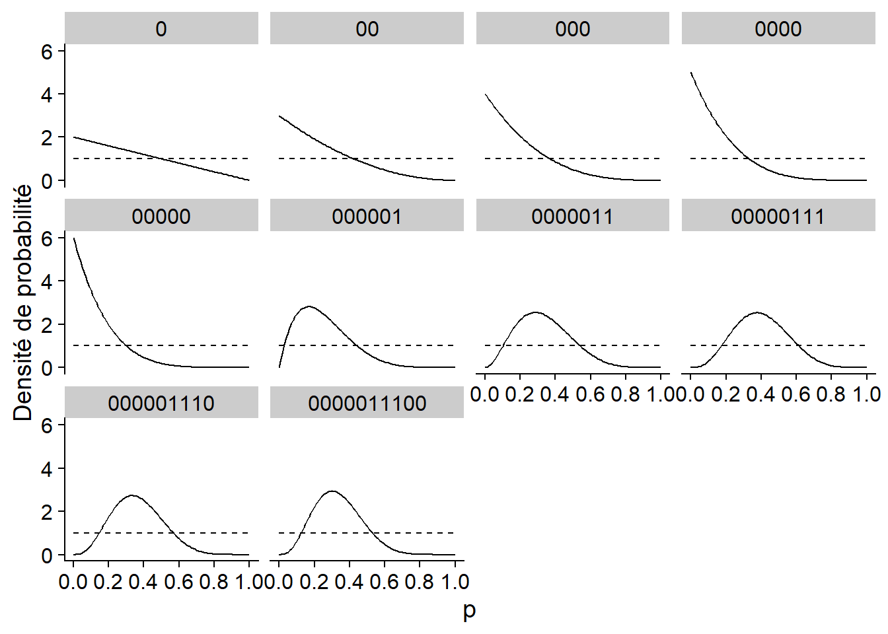
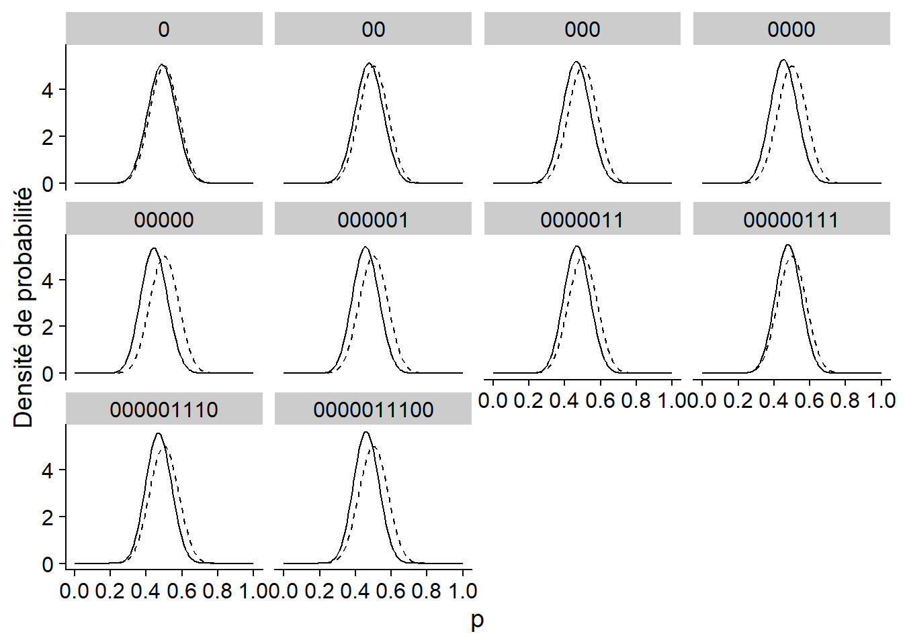
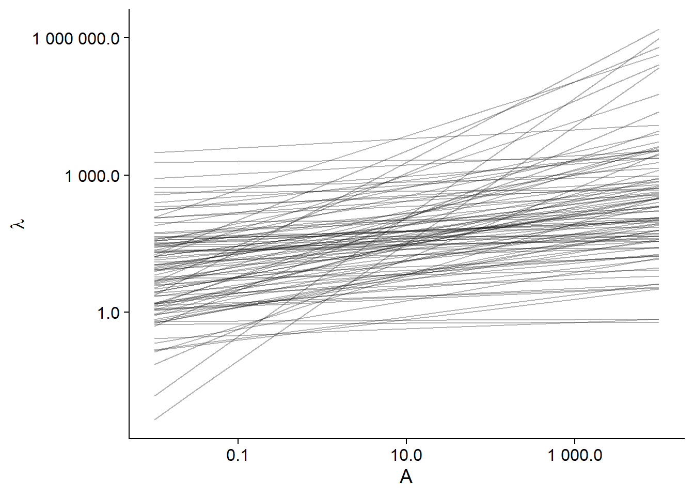
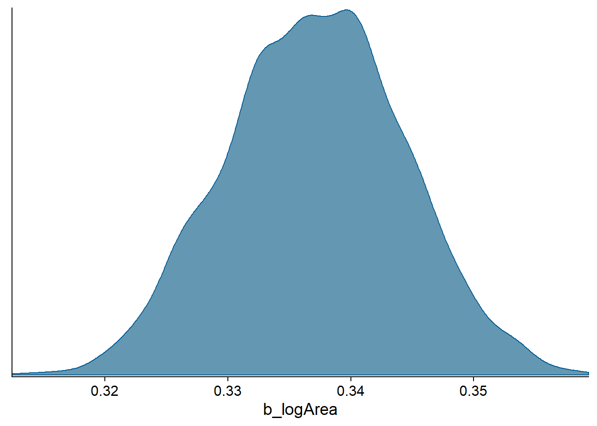
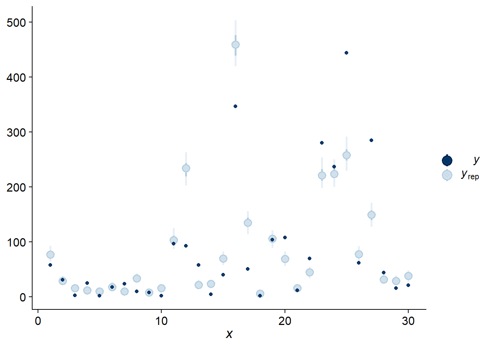
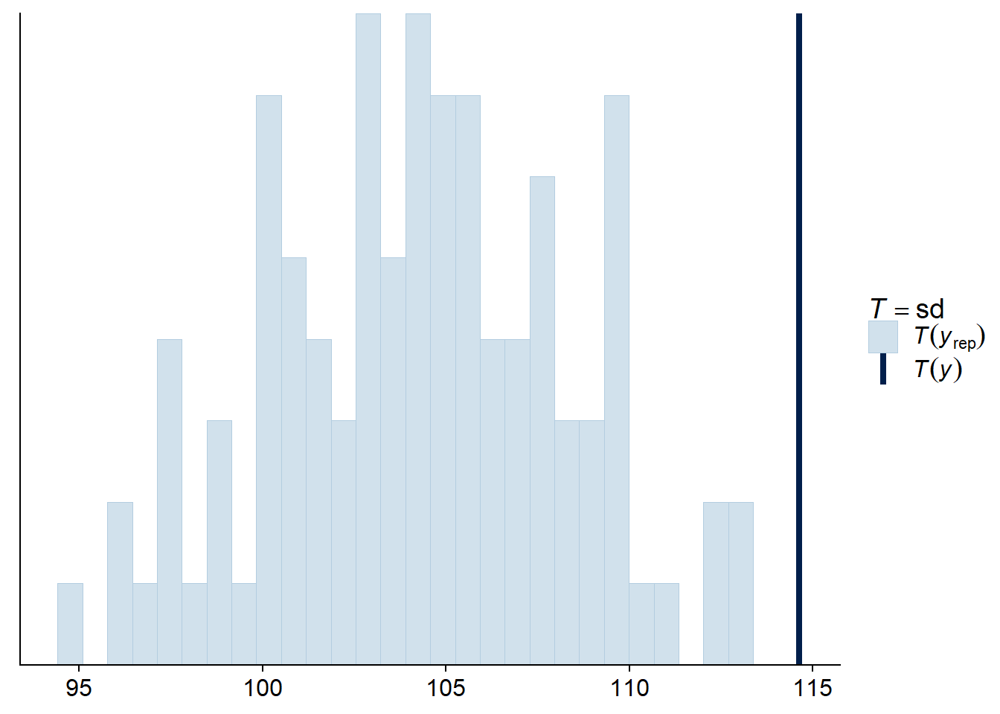

Introduction à l’analyse bayésienne
Introduction
Ce cours présente les concepts de base de l’approche bayésienne pour l’estimation de paramètres, en préparation à l’utilisation des modèles hiérarchiques bayésiens durant les deux prochains cours.
Nous commençons avec une présentation de la théorie de la probabilité conditionnelle et du théorème de Bayes, un sujet qui n’est pas particulier à l’inférence bayésienne, mais qui sera utile pour comprendre la logique de cette approche.
Contenu du cours
Probabilité conditionnelle
Inférence bayésienne
Exemple de régression bayésienne
Visualiser et vérifier l’ajustement
Probabilité conditionnelle
Exemple
Supposons qu’un nouveau test vise à dépister une maladie en mesurant la concentration d’une certaine protéine dans le sang. Cette concentration est plus élevée en moyenne chez les personnes atteintes que chez celles non-atteintes, mais ne permet pas de départager parfaitement les deux groupes. Les études cliniques ont permis d’estimer les deux propriétés suivantes de ce test:
La sensibilité du test, soit la probabilité d’obtenir un résultat positif si la maladie est présente, est de 95%.
La spécificité du test, soit la probabilité d’obtenir un résultat négatif si la maladie est absente, est de 99%.
À partir de cette information, peut-on déterminer quelle est la probabilité d’être atteint de la maladie, si on reçoit un résultat positif?
Tel que nous verrons ci-dessous, cette probabilité dépend de la prévalence générale de la maladie dans la population testée. Supposons donc que 0.2% de la population testée soit atteinte.
Avec cette information, nous pouvons diviser la population testée en 4 groupes selon que la maladie soit présente (\(M_1\)) ou non (\(M_0\)) et selon que le test soit positif (\(T_+\)) ou négatif (\(T_-\)). Sur 10 000 personnes recevant le test, nous pouvons calculer qu’en moyenne:
0.2% x 10 000 = 20 seront atteintes.
Sur 20 personnes atteintes, en moyenne 95% x 20 = 19 recevront un résultat positif, et 1 recevra un résultat négatif.
Sur 9980 personnes non-atteintes, en moyenne 1% x 9980 = 99.8 (arrondi à 100) recevront un résultat positif et les autres 9880 recevront un résultat négatif.
| Atteint: \(M_1\) | Non-atteint: \(M_0\) | Total | |
|---|---|---|---|
| Test positif: \(T_+\) | 19 | 100 | 119 |
| Test négatif: \(T_-\) | 1 | 9880 | 9881 |
| Total | 20 | 9980 | 10000 |
Donc, sur les 119 personnes recevant en moyenne un résultat positif, 19 / 119 = environ 16% sont atteintes de la maladie. Parmi celles recevant un résultat négatif, 1 / 9881 = environ 0.01% sont atteintes.
Dans la section suivante, nous reprenons ce calcul en utilisant le concept de probabilité conditionnelle.
Définitions
Probabilité conditionnelle
Si \(x\) et \(y\) sont deux variables aléatoires, la probabilité conditionnelle \(p(y|x)\) est la probabilité d’une valeur de \(y\) pour une valeur donnée de \(x\) (on dit aussi la probabilité de \(y\) sachant \(x\)).
Dans notre exemple, nous avons deux variables: \(M\) représente la présence ou absence de la maladie et \(T\) représente le résultat positif ou négatif du test. La sensibilité du test est la probabilité de \(T_+\) si on sait que la personne est atteinte, donc \(P(T_+ | M_1)\), égale à 0.95. La spécificité quant à elle représente la probabilité conditionnelle \(P(T_- | M_0)\), égale à 0.99.
Probabilité conjointe
La probabilité conjointe d’obtenir à la fois une certaine valeur de \(x\) et une certaine valeur de \(y\), notée \(p(x, y)\), peut être calculée de deux façons: (1) la probabilité d’obtenir \(x\) multipliée par la probabilité d’obtenir \(y\), sachant qu’on a obtenu \(x\); ou (2) la probabilité d’obtenir \(y\) multipliée par la probabilité d’obtenir \(x\), sachant qu’on a obtenu \(y\).
\[p(x, y) = p(x) p(y | x) = p(y) p(x | y)\]
Dans notre exemple, voici les deux façons de calculer la probabilité d’être atteint de la maladie et d’obtenir un test positif:
\[p(M_1, T_+) = p(M_1) p(T_+ | M_1) = p(T_+) p(M_1 | T_+)\]
Probabilité marginale
La probabilité marginale d’une variable \(y\), \(p(y)\), est sa probabilité si on ignore la valeur des autres variables. Si on ne connaît pas directement \(p(y)\), mais qu’on connaît \(p(y, x)\) pour chaque valeur possible d’une autre variable \(x\), alors \(p(y)\) correspond à la somme des probabilités conjointes de \(x\) et \(y\) pour chaque valeur de \(x\). (La marginalisation représente l’action de faire cette somme des différentes possibilités pour les variables autres que \(y\).)
\[p(y) = \sum_x p(y, x) = \sum_x p(y|x) p(x)\]
Si \(x\) est une variable continue, le principe est le même, mais la somme devient une intégrale:
\[p(y) = \int p(y, x) \text{d}x = \int p(y|x) p(x) \text{d}x\]
En revenant à notre exemple, nous pouvons exprimer chaque élément du tableau comme une probabilité conjointe d’une valeur de \(M\) ou de \(T\) (cases intérieures), ou comme une probabilité marginale (dans le cas des sommes de chaque ligne et de chaque colonne).
| \(M_1\) | \(M_0\) | Total | |
|---|---|---|---|
| \(T_+\) | \(p(M_1, T_+)\) | \(p(M_0, T_+)\) | \(p(T_+)\) |
| \(T_-\) | \(p(M_1, T_-)\) | \(p(M_0, T_-)\) | \(p(T_-)\) |
| Total | \(p(M_1)\) | \(p(M_0)\) | 1 |
Nous pouvons ainsi remplir les cases du tableau en utilisant la relation entre probabilités conditionnelles, conjointes et marginales. Par exemple, pour la rangée \(T_+\):
\(p(M_1, T_+) = p(M_1) p(T_+ | M_1) = 0.002 \times 0.95 = 0.0019\)
\(p(M_0, T_+) = p(M_0) p(T_+ | M_0) = 0.998 \times 0.01 = 0.00998\) (\(p(T_+ | M_0)\) est la probabilité d’obtenir un faux positif, donc le complément de la spécificité, égal à 1%.)
\(p(T_+) = p(M_1, T_+) + p(M_0, T_+) = 0.019 + 0.00998 \approx 0.119\)
Voici le tableau complet:
| \(M_1\) | \(M_0\) | Total | |
|---|---|---|---|
| \(T_+\) | \(p(M_1, T_+)\) = 0.0019 | \(p(M_0, T_+)\) = 0.01 | \(p(T_+)\) = 0.0119 |
| \(T_-\) | \(p(M_1, T_-)\) = 0.0001 | \(p(M_0, T_-)\) = 0.988 | \(p(T_-)\) = 0.9881 |
| Total | \(p(M_1)\) = 0.002 | \(p(M_0)\) = 0.998 | 1 |
Théorème de Bayes
Pour deux variables \(x\) et \(y\), il peut être plus facile de calculer \(p(y|x)\) que \(p(x|y)\), ou vice versa. Dans notre exemple, nous connaissions la probabilité d’avoir un résultat positif si la maladie est présente \(p(T_+ | M_1)\), mais nous cherchions la probabilité que la maladie soit présente si le résultat est positif: \(p(M_1 | T_+)\). Le théorème de Bayes nous indique comment “inverser” la probabilité conditionnelle sans avoir à remplir un tableau comme celui ci-dessus.
Rappelons-nous qu’il y a deux façons de calculer la probabilité conjointe \(p(x, y)\) d’une valeur de \(x\) et d’une valeur de \(y\):
\[p(x, y) = p(x) p(y | x) = p(y) p(x | y)\]
Si on divise les deux parties à droite par \(p(y)\), on obtient le théorème de Bayes:
\[p(x|y) = \frac{p(x) p(y | x)}{p(y)}\]
Celui-ci nous indique qu’on peut calculer la distribution de probabilité de \(x\) conditionnelle à \(y\) si on connaît: (1) la distribution de probabilité de \(y\) conditionnelle à \(x\) et (2) la distribution de probabilité marginale de \(x\). Pour ce qui est du dénominateur \(p(y)\), celui-ci peut être obtenu en faisant la somme (ou l’intégrale) de \(p(x) p(y|x)\) sur l’ensemble des valeurs possibles de \(x\).
Dans notre exemple, l’application du théorème montre que \(p(M_1 | T_+)\) = 16%, tel que déterminé précédemment.
\[p(M_1 | T_+) = \frac{p(T_+ | M_1) p(M_1)}{p(T_+)}\]
–
\[p(M_1 | T_+) = \frac{p(T_+ | M_1) p(M_1)}{p(T_+ | M_1) p(M_1) + p(T_+ | M_0) p(M_0)}\]
\[p(M_1 | T_+) = \frac{0.95 \times 0.002}{0.95 \times 0.002 + 0.01 \times 0.998} = 0.16\]
Notez donc qu’avec un résultat positif, la probabilité d’être atteint est multipliée par 80 (16% vs. 0.2%), mais il demeure plus probable de ne pas être atteint. Autrement dit, si une maladie est assez rare, la plupart des résultats positifs seront des faux positifs. C’est pourquoi certains tests ne sont pas réalisés sans présence d’autres symptômes qui augmenteraient la probabilité d’être atteint avant le test. La question de réaliser un test ou non est une décision éthique parfois difficile, car une absence de détection ou une fausse alerte ont toutes deux des effets néfastes.
De la même façon, on pourrait calculer \(p(M_1 | T_-)\) = 0.01%. Donc avec un résultat négatif, la probabilité d’être atteint est divisée par 20 par rapport à la prévalence générale de la maladie.
En réarrangeant les termes du théorème de Bayes:
\[p(M_1 | T_+) = \frac{p(T_+ | M_1)}{p(T_+)} p(M_1)\]
on voit qu’il s’agit d’une méthode pour réviser une probabilité initiale \(p(M_1)\) en fonction d’une nouvelle information donnée par le résultat du test, pour obtenir une probabilité \(p(M_1 | T_+)\). Cette idée est à la base de l’inférence bayésienne.
Inférence bayésienne
Interprétations fréquentiste et bayésienne
Dans la section précédente, nous avons vu comment le théorème de Bayes permet de calculer la probabilité d’être atteint d’une maladie en fonction de sa prévalence générale \(p(M_1)\) et du résultat d’un test de dépistage, \(T_+\) ou \(T_-\):
\[p(M_1 | T_+) = \frac{p(T_+ | M_1)}{p(T_+)} p(M_1)\] \[p(M_1 | T_-) = \frac{p(T_- | M_1)}{p(T_-)} p(M_1)\]
Considérons maintenant \(M_1\) comme une hypothèse selon laquelle un patient donné est atteint de la maladie. La probabilité a priori de \(M_1\) (avant le test) est égale à \(p(M_1)\). Après le test, la probabilité a posteriori de \(M_1\) est \(p(M_1 | T_+)\) ou \(p(M_1 | T_-)\), selon le résultat.
Selon l’interprétation fréquentiste, les probabilités représent la fréquence d’événements après un grand nombre de répétitions d’une observation ou d’une expérience. Dans ce cas-ci, nous pouvons assigner une probabilité à \(M_1\) car le patient provient d’une population et la maladie a une certaine fréquence dans cette population.
L’interprétation fréquentiste est à la base de la plupart des cours d’introduction aux statistiques, car elle permet notamment de définir des tests d’hypothèse et des intervalles de confiance. Dans cette approche, on peut associer une probabilité aux statistiques basées sur les données, comme la moyenne d’un échantillon \(\bar{x}\), mais pas aux paramètres d’un modèle comme la moyenne de la population \(\mu\). Quand on définit un intervalle de confiance à 95% autour de \(\bar{x}\), ce n’est pas cet intervalle particulier qui a une probabilité de 95% de contenir \(\mu\) (après l’échantillonnage, l’intervalle et \(\mu\) sont tous les deux fixes), mais c’est 95% des échantillons possibles de \(x\) qui produiraient un intervalle contenant la valeur de \(\mu\).
Selon l’interprétation bayésienne, les probabilités représentent notre incertitude sur la valeur d’une quantité. On peut donc parler d’une distribution de probabilité même pour une valeur présumée fixe, ex.: un paramètre d’un modèle.
Historiquement, les débats entre les deux approches ont souvent été acrimonieux. Aujourd’hui, les mêmes statisticiens peuvent employer l’approche fréquentiste ou l’approche bayésienne selon la nature du problème. Cependant, il faut s’assurer de toujours interpréter les résultats en fonction de l’approche utilisée. Il faut se rappeler, par exemple, qu’un intervalle de confiance fréquentiste ne représente pas une distribution de probabilité du paramètre, ou qu’une vérification de l’ajustement d’un modèle bayésien n’est pas équivalente à un test d’hypothèse nulle.
Inférence bayésienne sur la valeur d’un paramètre
Supposons que nous avons une série d’observations d’une variable \(y\), que nous représentons par un modèle incluant un paramètre ajustable \(\theta\). Dans l’approche bayésienne, nous assignons une distribution de probabilité a priori à \(\theta\), \(p(\theta)\), représentant l’incertitude sur la valeur du paramètre avant d’avoir observé les données. La probabilité des observations \(y\), conditionnelle à une valeur de \(\theta\) donnée, est donnée par la fonction de vraisemblance \(p(y|\theta)\).
À partir de cette information, nous pouvons utiliser le théorème de Bayes pour déduire \(p(\theta | y)\), soit la distribution a posteriori de \(\theta\) après avoir observé \(y\).
\[p(\theta | y) = \frac{p(y | \theta) p(\theta)}{p(y)}\]
Le dénominateur \(p(y)\) est obtenu en faisant la somme (ou l’intégrale) de \(p(y | \theta) p(\theta)\) pour l’ensemble des valeurs possibles de \(\theta\). La plupart du temps, cette quantité ne peut pas être calculée exactement, mais elle est approximée par les méthodes de Monte-Carlo que nous verrons au prochain cours.
Exemple
Voici un exemple simple visant à illustrer le principe de l’inférence bayésienne.
Supposons que dix lancers d’une pièce de monnaie produisent la série de valeurs suivantes (0 = pile, 1 = face): 0,0,0,0,0,1,1,1,0,0. Nous cherchons à estimer \(p\), la probabilité d’obtenir “face” pour cette pièce.
Si \(y\) est le nombre de “face” obtenus sur \(n\) lancers, alors la fonction de vraisemblance est donnée par la distribution binomiale: \(y \sim \text{Bin}(n, p)\).
Les différents panneaux du graphique ci-dessous montrent la distribution a posteriori de \(p\) (ligne pleine) après chaque lancer dans la séquence. Dans ce cas, la distribution a priori indiquée par la ligne pointillée était très diffuse, accordant une probabilité égale à chaque valeur possible de \(p\). Après 10 lancers, le maximum de la distribution a posteriori est égal à la proportion de “face” dans les données (0.3), qui est aussi le maximum de vraisemblance.

Le graphique ci-dessous montre la même inférence, mais avec une distribution a priori beaucoup plus concentrée autour de 0.5. Cette distribution représente l’idée qu’une pièce a beaucoup plus de chance d’être équilibrée (50% face) et que les déviations autour de cette valeur sont généralement mineures. Dans ce cas, la distribution a posteriori se déplace en suivant les données, mais reste beaucoup plus près de celle a priori.

Finalement, le graphique ci-dessous compare la distribution a posteriori (ligne orange) en fonction de chaque distribution a priori (ligne pointillée). La vraisemblance (identique dans les deux cas) est indiquée par une ligne pleine et a été normalisée pour être comparée aux distributions.
Pour la distribution a priori diffuse (à gauche), la distribution a posteriori est exactement proportionnelle à la vraisemblance. Lorsque la distibution a priori est plus concentrée que la vraisemblance (à droite), la distribution a posteriori se situe entre les deux, mais plus près de la distribution a priori.

Choix de la distribution a priori
Dans certains cas, les connaissances antérieures peuvent nous donner une idée assez spécifique de la distribution a priori à utiliser. Par exemple, la distribution a posteriori obtenue par une étude peut servir de distribution a priori pour une étude subséquente.
Le plus souvent toutefois, nous pouvons utiliser une distribution assez diffuse pour pénaliser les valeurs très implausibles des paramètres, sans trop contraindre l’analyse. En anglais, le terme weakly informative prior décrit ce type de choix.
Une des critiques courantes de l’inférence bayésienne est que l’assignation d’une distribution a priori ajoute un biais à l’analyse. Cependant, si le choix de cette distribution est justifiée par le besoin de pénaliser des valeurs trop extrêmes des paramètres, le rôle de la distribution a priori n’est pas si différent de celui d’un effet aléatoire qui resserre les moyennes de groupes vers la moyenne générale, ou du paramètre de lissage dans un modèle additif qui pénalise les courbes trop complexes. Toutes ces méthodes sont des exemples de régularisation, c’est-à-dire l’imposition de contraintes permettant de contrôler le risque de surajustement dans un modèle complexe, sans avoir à fixer complètement certains paramètres et certains effets.
On peut considérer le choix de la distribution a priori comme une supposition qui s’ajoute aux autres suppositions du modèle, comme le choix de la distribution représentant les observations, le choix des prédicteurs et interactions à inclure ou non dans le modèle, etc. Ultimement, c’est le modèle au complet qui doit être validé en fonction de sa capacité à reproduire les caractéristiques des observations, incluant des observations autres que celles utilisées pour réaliser son ajustement.
Avantages et désavantages de l’approche bayésienne
Comme le maximum de vraisemblance, l’inférence bayésienne a l’avantage d’être applicable à n’importe quel type de modèle génératif, c’est-à-dire un modèle qui décrit mathématiquement comment les observations sont générées à partir des paramètres. Dans une approche bayésienne, les paramètres de divers types de modèles, incluant tous ceux vus dans ce cours (modèles linéaires généralisés, à effets mixtes, additifs, avec dépendance temporelle ou spatiale) peuvent être estimés avec les mêmes algorithmes; nous discuterons davantage de ces algorithmes au prochain cours. Ces algorithmes produisent la distribution a posteriori conjointe des paramètres du modèle, à partir de laquelle nous pouvons facilement obtenir la distribution de n’importe quelle quantité dérivée du modèle: combinaison des paramètres, prédiction, etc. À titre de comparaison, le maximum de vraisemblance ne nous indique que la valeur de chaque paramètre maximisant la vraisemblance et l’obtention d’intervalles de confiance sur des valeurs dérivées de plusieurs paramètres peut être très laborieuse. En contrepartie, les méthodes bayésiennes produisent plus d’informations, mais demandent beaucoup plus de ressources de calcul.
Du point de vue de la conception du modèle, l’approche bayésienne est aussi plus demandante, car il faut spécifier une distribution a priori pour chaque paramètre ajustable. Comme nous avons mentionné ci-dessus, ces distributions a priori sont néanmoins utiles pour stabiliser l’estimation de modèles complexes; lorsque les données sont limitées, contraindre la valeur des effets peut être une solution préférable à simplement éliminer ces effets du modèle.
Exemple de régression bayésienne
Pour illustrer l’approche bayésienne, nous estimerons ici la relation entre le nombre d’espèces de plantes et la superficie de 30 îles de l’archipel des Galapagos, à partir du jeu de données galapagos.csv déjà vu plus tôt dans ce cours.
galap <- read.csv("../donnees/galapagos.csv")
head(galap)## Name Species Endemics Area Elevation Nearest Scruz Adjacent
## 1 Baltra 58 23 25.09 346 0.6 0.6 1.84
## 2 Bartolome 31 21 1.24 109 0.6 26.3 572.33
## 3 Caldwell 3 3 0.21 114 2.8 58.7 0.78
## 4 Champion 25 9 0.10 46 1.9 47.4 0.18
## 5 Coamano 2 1 0.05 77 1.9 1.9 903.82
## 6 Daphne.Major 18 11 0.34 119 8.0 8.0 1.84Le nombre d’espèces par île varie entre 2 et 444, tandis que la superficie des îles varie sur plusieurs ordres de grandeur, de 0.01 à 5000 km\(^2\).
summary(galap$Species)## Min. 1st Qu. Median Mean 3rd Qu. Max.
## 2.00 13.00 42.00 85.23 96.00 444.00summary(galap$Area)## Min. 1st Qu. Median Mean 3rd Qu. Max.
## 0.010 0.258 2.590 261.709 59.238 4669.320Nous supposons que le nombre d’espèces \(S\) suit une distribution de Poisson, où le logarithme du nombre d’espèces moyen varie selon le logarithme de la superficie \(A\).
\[S \sim \text{Pois}(\lambda)\]
\[\log \lambda = \beta_0 + \beta_1 \log A\]
Cette dernière équation est équivalent à une loi de puissance (avec exposant \(\beta_1\)) reliant \(\lambda\) et \(A\).
\[\lambda = e^{\beta_0} A^{\beta_1}\]
Choix des distributions a priori
Dans l’équation ci-dessus, \(\beta_1\) est l’exposant de la relation entre le nombre d’espèces et la superficie d’une île. Afin de choisir une distribution a priori, nous supposons d’abord que \(\beta_1 \ge 0\), en raison d’un argument théorique selon laquelle une plus grande surface ne peut pas avoir un effet négatif sur le nombre d’espèces moyen. Cela ne signifie pas qu’une plus grande île ne peut pas avoir moins d’espèces; seulement qu’elle ne peut pas avoir moins d’espèces en raison de sa superficie plus grande. Aussi, puisque \(\beta_1 = 1\) représente une relation linéaire entre \(S\) et \(A\), une valeur \(\beta_1 > 1\) signifierait que l’effet d’ajout d’un km\(^2\) supplémentaire sur \(S\) est plus importante pour une grande île (ex.: relation quadratique avec \(\beta = 2\)). Au contraire, nous supposons qu’il est plus plausible que \(\beta_1 < 1\), car l’ajout d’un km\(^2\) devrait avoir plus d’effet sur le nombre d’espèces si l’île est petite que si elle est déjà très grande.
Dans ce cas, nous choisissons comme distribution a priori pour \(\beta_1\) une distribution exponentielle avec un paramètre de 4: \(\beta_1 \sim \text{Exp}(4)\). La distribution exponentielle a un maximum à 0 et décroît de façon exponentielle; le taux de cette décroissance est donnée par le paramètre ajustable. Ici, avec un paramètre de 4 nous avons environ 2% de probabilité que \(\beta_1 > 1\). Ainsi, les valeurs supérieures à 1 sont jugées improbables mais pas impossibles.

Quant à l’ordonnée à l’origine \(\beta_0\), il s’agit du logarithme du nombre d’espèces moyen lorsque \(\log A = 0\), autrement dit lorsque la superficie est de 1 km\(^2\).
Note: Le package brms que nous utiliserons transforme les prédicteurs d’une régression pour les centrer sur leur valeur moyenne. Cela n’affecte pas les résultats produits pour la régression, mais cela nécessite que nous spécifions une distribution a priori non pas pour \(\beta_0\) tel que défini ici, mais pour une ordonnée à l’origine qui représenterait la valeur moyenne de la réponse si les prédicteurs étaient à leur valeur moyenne. Autrement dit, nous cherchons une distribution a priori du log du nombre d’espèces pour une île ayant une log-superficie moyenne.
Supposons que les valeurs plausibles pour le nombre d’espèces de l’île moyenne sont entre 1 et 1000. En prenant le log de ces valeurs, nous obtenons \(\log(1) = 0\) et \(\log(1000) = 6.91\). Dans ce cas, nous choisissons une distribution a priori normale, avec moyenne de 3 et écart-type de 2: \(\beta_0 \sim \text{N}(3, 2)\). Celle-ci place environ 95% de la probabilité entre -1 et 7.
Droites de régression possibles a priori
Pour voir si nos distributions a priori couvrent bien les scénarios plausibles pour notre modèle, il est utile de simuler les prédictions réalisées par ces distributions. Dans le code R ci-dessous, nous créons d’abord un jeu de données sim_df contenant 100 valeurs de \(\beta_0\) et \(\beta_1\) à partir des distributions a priori, avec un index i identifiant la simulation. Nous créons ensuite une grille associant à chaque numéro de simulation une série géométrique de valeurs de la superficie (entre 0.01 km\(^2\) et 10 000 km\(^2\)) pour réaliser les prédictions. Finalement, nous combinons les deux jeux de données et nous calculons la valeur \(\lambda\) prédite pour chaque superficie pour chacune des 100 simulations.
library(dplyr)
# 100 simulations des paramètres b0 et b1
sim_df <- data.frame(i = 1:100, b0 = rnorm(100, 3, 2), b1 = rexp(100, 4))
# Grille avec différentes valeurs de la superficie pour chaque simulation
grille <- expand.grid(i = 1:100, area = c(0.01, 0.03, 0.1, 0.3, 1, 3, 10, 30,
100, 300, 1000, 3000, 10000))
# Nombre moyen d'espèces pour chaque simulation
sim_df <- inner_join(sim_df, grille) %>%
mutate(lambda = exp(b0 + b1 * log(area)))
head(sim_df)## i b0 b1 area lambda
## 1 1 0.580099 0.08847682 0.01 1.188448
## 2 1 0.580099 0.08847682 0.03 1.309768
## 3 1 0.580099 0.08847682 0.10 1.456991
## 4 1 0.580099 0.08847682 0.30 1.605725
## 5 1 0.580099 0.08847682 1.00 1.786215
## 6 1 0.580099 0.08847682 3.00 1.968557Voici les droites de régression obtenues avec 100 simulations a priori:
ggplot(sim_df, aes(x = area, y = lambda, group = i)) +
labs(x = "A", y = expression(lambda)) +
geom_line(alpha = 0.3) +
scale_x_log10(label = scales::number_format(accuracy = 0.1)) +
scale_y_log10(label = scales::number_format(accuracy = 0.1))
On voit que ces droites couvrent une gamme de possibilités très larges, certaines mêmes implausibles (la plus prononcée a une fraction d’espèce pour la plus petite île jusqu’à plus de 100 000 espèces pour la plus grandes).
Régression bayésienne avec brms
Le package brms, qui est un acronyme pour Bayesian Regression Models using Stan, nous permet d’ajuster divers modèles de régression par l’approche bayésienne. L’avantage de ce package est qu’il nous permet de spécifier un large éventail de modèles, incluant presque tous les types de modèles paramétriques vus cette session (ex.: GLMM, GAMM, modèles avec dépendance temporelle et spatiale). La spécification des modèles utilise le même type de formule que les autres packages en R, puis brms traduit automatiquement les modèles spécifiés dans le langage utilisé par le programme d’inférence bayésienne Stan, que nous présenterons au prochain cours.
Dans ce package, la fonction brm est utilisée pour ajuster un modèle de régression.
library(brms)
bmod <- brm(Species ~ log(Area), data = galap, family = poisson,
prior = c(set_prior("normal(3, 2)", class = "Intercept"),
set_prior("exponential(4)", class = "b", lb = 0)))La première ligne ressemble à la spécification d’un GLM classique, tandis que les autres lignes définissent les distributions a priori pour chaque paramètre. L’ordonnée à l’origine (class = "Intercept") reçoit une distribution normale avec moyenne de 3 et écart-type de 2, tandis que les autres coefficients de régression (class = "b") - il y en a un seul ici - reçoivent une distribution exponentielle de paramètre 4.
Notes: - La spécification des distributions, ex.: “normal(3, 2)” est basée sur la syntaxe du langage Stan. - L’argument lb = 0 (pour lower bound) est nécessaire ici, car la distribution a priori exponentielle est seulement valide pour des valeurs plus grandes ou égales à 0.
Voici le sommaire des résultats du modèle:
summary(bmod)## Family: poisson
## Links: mu = log
## Formula: Species ~ log(Area)
## Data: galap (Number of observations: 30)
## Samples: 4 chains, each with iter = 2000; warmup = 1000; thin = 1;
## total post-warmup samples = 4000
##
## Population-Level Effects:
## Estimate Est.Error l-95% CI u-95% CI Rhat Bulk_ESS Tail_ESS
## Intercept 3.27 0.04 3.19 3.36 1.00 1072 999
## logArea 0.34 0.01 0.32 0.35 1.00 1159 1376
##
## Samples were drawn using sampling(NUTS). For each parameter, Bulk_ESS
## and Tail_ESS are effective sample size measures, and Rhat is the potential
## scale reduction factor on split chains (at convergence, Rhat = 1).Plusieurs des informations données ici sont liées à l’algorithme d’inférence bayésienne, dont nous discuterons au prochain cours. Les colonnes Estimate et Est. Error donnent respectivement la moyenne (3.27 et 0.34) et l’écart-type (0.04 et 0.01) de la distribution a posteriori des coefficients. Ces résultats sont en fait identiques à ce qu’on obtient avec un GLM classique, comme nous pouvons voir ci-dessous.
gmod <- glm(Species ~ log(Area), data = galap, family = poisson)
summary(gmod)##
## Call:
## glm(formula = Species ~ log(Area), family = poisson, data = galap)
##
## Deviance Residuals:
## Min 1Q Median 3Q Max
## -10.4688 -3.6073 -0.8874 2.9028 10.1517
##
## Coefficients:
## Estimate Std. Error z value Pr(>|z|)
## (Intercept) 3.273200 0.041663 78.56 <2e-16 ***
## log(Area) 0.337737 0.007154 47.21 <2e-16 ***
## ---
## Signif. codes: 0 '***' 0.001 '**' 0.01 '*' 0.05 '.' 0.1 ' ' 1
##
## (Dispersion parameter for poisson family taken to be 1)
##
## Null deviance: 3510.73 on 29 degrees of freedom
## Residual deviance: 651.67 on 28 degrees of freedom
## AIC: 816.5
##
## Number of Fisher Scoring iterations: 5Nous avons ici un modèle simple avec suffisamment de données, donc l’influence de la distribution a priori est négligeable et les deux méthodes (inférence bayésienne et maximum de vraisemblance) mènent à la même conclusion. Néanmoins, cet exercice visait à illustrer comment nous pouvions choisir des distributions a priori pour un jeu de données réel.
Visualiser et vérifier l’ajustement du modèle
Estimation des effets et intervalles de crédibilité
Revenons sur le sommaire des résultats de notre régression bayésienne:
summary(bmod)## Family: poisson
## Links: mu = log
## Formula: Species ~ log(Area)
## Data: galap (Number of observations: 30)
## Samples: 4 chains, each with iter = 2000; warmup = 1000; thin = 1;
## total post-warmup samples = 4000
##
## Population-Level Effects:
## Estimate Est.Error l-95% CI u-95% CI Rhat Bulk_ESS Tail_ESS
## Intercept 3.27 0.04 3.19 3.36 1.00 1072 999
## logArea 0.34 0.01 0.32 0.35 1.00 1159 1376
##
## Samples were drawn using sampling(NUTS). For each parameter, Bulk_ESS
## and Tail_ESS are effective sample size measures, and Rhat is the potential
## scale reduction factor on split chains (at convergence, Rhat = 1).La section Population-Level Effects décrit les effets fixes du modèle (ici, il n’y a pas d’effets aléatoires). La même information peut être obtenue avec fixef.
fixef(bmod)## Estimate Est.Error Q2.5 Q97.5
## Intercept 3.2724709 0.040513089 3.1918485 3.3555394
## logArea 0.3377724 0.006974184 0.3237699 0.3511179Par défaut, l’estimé est la moyenne a posteriori du paramètre et l’erreur est son écart-type. Cependant, on peut choisir des estimés plus robustes aux valeurs extrêmes. Avec la spécification robust = TRUE, R nous donne un estimé basé sur la médiane et une erreur basée sur l’écart absolu médian.
fixef(bmod, robust = TRUE)## Estimate Est.Error Q2.5 Q97.5
## Intercept 3.2718813 0.039567998 3.1918485 3.3555394
## logArea 0.3378376 0.007005959 0.3237699 0.3511179Dans ce cas-ci, la distribution a posteriori s’approche probablement d’une distribution normale, ce qui fait que les estimés robustes et non-robustes sont presque identiques.
Les quantiles à 2.5% et 97.5% présentés dans ce sommaire définissent un intervalle de crédibilité contenant 95% de la distribution de probabilité a posteriori du paramètre. Ces intervalles sont les analogues bayésiens des intervalles de confiance.
La fonction marginal_effects permet de visualiser l’effet de chaque prédicteur sur la réponse, avec un intervalle de crédibilité à 95%. Si nous avions plusieurs prédicteurs, l’effet représenté pour un prédicteur serait calculé en fixant les autres prédicteurs à leur valeur moyenne.
marginal_effects(bmod)## Warning: Method 'marginal_effects' is deprecated. Please use
## 'conditional_effects' instead.
La fonction stanplot permet de réaliser différentes visualisations de la distribution a posteriori des paramètres. Par exemple, nous affichons ici la densité de probabilité (type = "dens") pour le coefficient de log(Area):
stanplot(bmod, pars = "b_logArea", type = "dens")## Warning: Method 'stanplot' is deprecated. Please use 'mcmc_plot' instead.
L’aspect “bosselé” de la courbe de densité est dû au fait que la distribution a posteriori est approximée par l’algorithme, comme nous verrons dans les prochains cours.
Vérification des prédictions a posteriori
Puisque l’inférence bayésienne s’applique à plusieurs types de modèles, les statistiques utilisées pour vérifier l’ajustement varient d’un modèle à l’autre. Cependant, une stratégie générale consiste à simuler des jeux de données à partir de la distribution a posteriori des paramètres et vérifier si les caractéristiques des données observées sont bien représentées par ces simulations. Cette technique s’appelle la vérification des prédictions a posteriori (ou posterior predictive check).
Dans brms, plusieurs options de vérification sont accessibles à partir de la fonction pp_check, ce qui nous évite d’avoir à coder nous-mêmes les simulations et visualisations. Par exemple, le type de vérification “dens_overlay” superpose la densité de probabilité estimée de l’ensemble des observations (\(y\), courbe foncée dans le graphique) à celles estimées à partir de simulations du modèle ajusté (\(y_{rep}\), courbes pâles). L’argument nsamples détermine le nombre de simulations réalisées.
Chaque simulation génère une valeur des paramètres à partir de leur distribution conjointe a posteriori, puis simule les données à partir du modèle, donc les résultats incluent à la fois l’incertitude sur les paramètres et la variation aléatoire des observations individuelles.
pp_check(bmod, nsamples = 100, type = "dens_overlay")
Ici, la courbe des observations n’est pas entièrement contenue dans l’enveloppe créée par les simulations, donc il y a possiblement un problème d’ajustement.
Cela se voit aussi avec la vérification de type “intervals”, qui compare chaque observation (elles sont ordonnées sur l’axe des \(x\) selon leur position dans le jeu de données) avec un intervalle de prédiction obtenu par le modèle. En fait, chaque point en bleu pâle dans le graphique ci-dessous indique deux intervalles: l’intervalle plus court contient 50% de la probabilité a posteriori, tandis que l’intervalle plus long en trait plus pâle en contient 95%.
pp_check(bmod, nsamples = 100, type = "intervals")
Puisque la majorité des observations se situent en dehors de leur intervalle de prédiction à 95%, on se doute que les observations sont plus variables que prévues. Pour vérifier cette possibilité de façon plus directe, nous pouvons calculer l’écart-type de la réponse pour chaque simulation a posteriori avec le type de vérification “stat” et la statistique “sd”.
pp_check(bmod, nsamples = 100, type = "stat", stat = "sd")## `stat_bin()` using `bins = 30`. Pick better value with `binwidth`.
En effet, l’écart-type observé est extrême par rapport aux prédictions du modèle, ce qui appuie l’idée que les données sont surdisperséees. Une distribution binomiale négative de la réponse serait peut-être plus appropriée ici.
Notez que les statistiques sommaires les plus utiles pour la vérification sont celles qui ne sont pas directement ajustées par le modèle. Par exemple, tous les modèles de régression s’ajustent pour bien représenter la moyenne des observations. Puisque la régression de Poisson n’a pas de paramètre séparé pour ajuster la dispersion des observations autour de leur moyenne, il est possible que celle-ci ne soit pas bien représentée par le modèle, ce qui fait de l’écart-type une bonne statistique à vérifier.
Résumé
- Dans l’inférence bayésienne, la probabilité a posteriori d’une valeur d’un paramètre est proportionnelle au produit de sa probabilité a priori et de sa vraisemblance selon les données observées.
\[p(\theta | y) = \frac{p(y | \theta) p(\theta)}{p(y)}\]
Pour un modèle complexe, la distribution a priori sert à pénaliser l’éloignement d’un paramètre des valeurs plausibles pour le système étudié.
L’influence de la distribution a priori diminue lorsque le nombre d’observations augmente.
Les intervalles de crédibilité contiennent un certain % de la probabilité a posteriori.
La vérification du modèle se fait en comparant les données simulées par le modèle ajusté aux observations (vérification des prédictions a posteriori).
Ces vérifications doivent être basées sur des statistiques sommaires dont l’ajustement n’est pas garanti par le modèle.